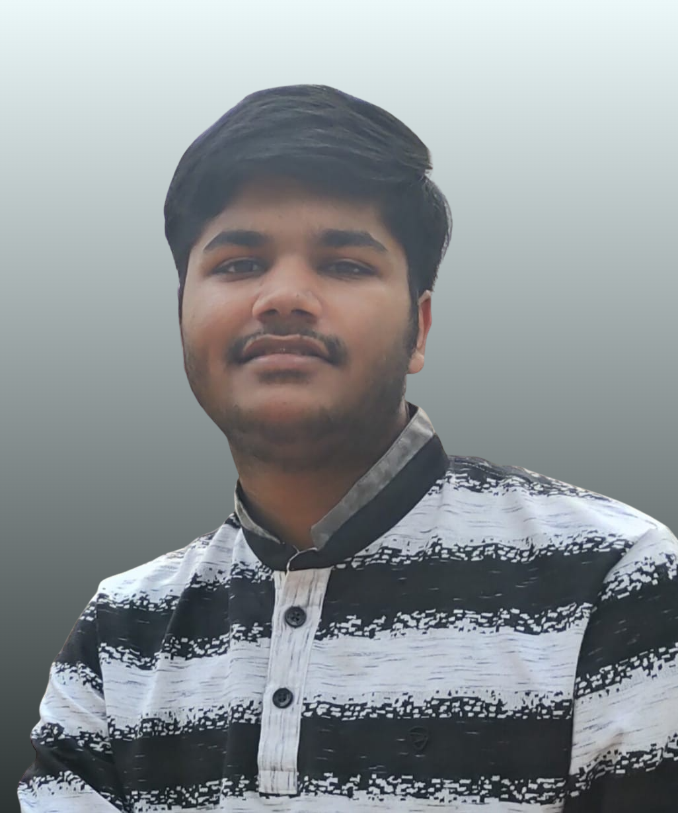

Saksham Goel: Training a Computer Scientist on Algorithms, Machine Learning and Chess
Saksham Goel
Department of Computer Science, IIT (BHU) Varanasi
goelsaksham88@gmail.com
|
LinkedIn |
GitHub |
LeetCode
Keywords: NLP, LLMs, clustering, full-stack development, algorithms, chess
1 Introduction

This page presents my academic background, experience, projects and achievements in the format of a short paper. Section 2 covers education, Section 3 covers experience, Section 4 covers projects, Section 5 covers skills and Section 6 covers achievements. Section 7 concludes.
2 Background
| Degree | Institute | Score | Years |
|---|---|---|---|
| M.Tech, CS | IIT (BHU) Varanasi | 8.68* | 2025 to now |
| B.Tech, CS | IIIT Pune | 7.29 | 2020 to 2024 |
| Senior Sec. | CBSE | 93.0% | 2019 |
| Secondary | CBSE | 10.0 | 2017 |
Table 1: Educational history. *Current CGPA.
Courses. Algorithms and Data Structures, Operating Systems, Database Management System, Machine Learning, Artificial Intelligence, Linear Algebra, Probability Theory and Random Processes, Discrete Mathematics.
3 Experience
Native AI Intern, Wipro Limited, Noida (June to July 2026).
- Built an end-to-end query classification pipeline for unlabelled customer letters, using Qwen3-0.6B embeddings and clustering (HDBSCAN, Agglomerative, IDEC) to discover query categories.
- Applied c-TF-IDF and KeyNMF for topic assignment and pseudo-labelling. This produced a labelled dataset for supervised classification and an inference pipeline returning Top-3 categories with confidence scores.
- Built an AWS Nova LLM extraction pipeline with query-specific JSON schemas, chosen by predicted class, to turn unstructured letters into structured JSON.
- Integrated both stages into one NLP/LLM workflow for automated categorization and extraction.
4 Projects
4.1 Stroke Prediction (Aug to Nov 2025, group project, code). An integrated framework combining preprocessing, association rule mining, outlier detection and Random Forest classification. Apriori and Local Outlier Factor exposed frequent patterns and anomalous patient profiles. SMOTE handled class imbalance, improving recall for high-risk cases.
4.2 Divide Xpert (Jul to Aug 2023, individual project, code, demo). A full-stack expense-sharing app with group creation, user management and simplified bill settlement. React, Bootstrap and JWT authentication on a Node.js and Express.js backend with MongoDB. A Priority Queue algorithm reduces the number of final transactions.
4.3 Message Spam Detector (Dec 2022, ML lab, code). Python pipeline with label encoding, Porter stemming and TF-IDF, classified with Multinomial Naive Bayes at over 95% accuracy.
5 Technical Skills
| Category | Tools |
|---|---|
| Languages | C++, Python, JavaScript |
| Data science | Pandas, NumPy |
| Web | NodeJS, ExpressJS, MongoDB |
| Tools | Git, VS Code, Linux |
Table 2: Technical skills.
6 Results and Achievements
- GATE (CS) 2025: 99.77 percentile among 170,000 candidates.
- JEE Mains 2020: 98.17 percentile among 1 million candidates.
- LeetCode: over 500 data structures and algorithms problems solved.
- Chess: official FIDE rating since December 2016, earned at a tournament by the Chandigarh Chess Association.
7 Conclusion
The author is open to internships and research collaborations. He is also open to playing chess: challenge him on Chess.com as virtual-me. Future work includes a publications list, which currently remains empty.
Acknowledgements
The author thanks Reviewer #2 for the helpful comments.